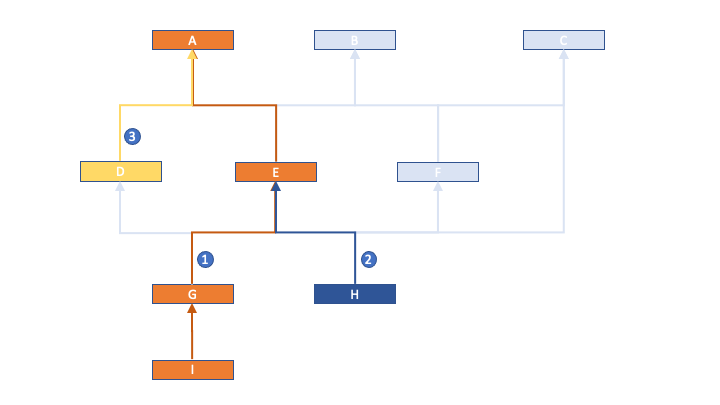
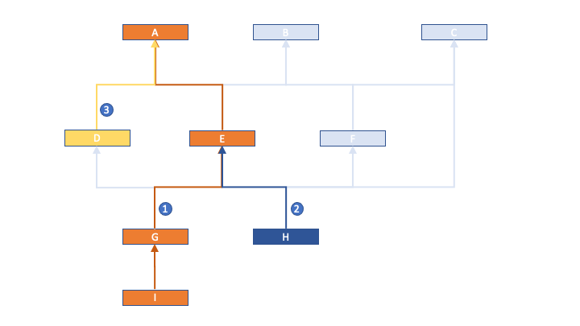

Identify Paths and Determine Object Sequence
This section describes the process of identifying paths based out of your data model, and ultimately derive the sequence of Objects for execution. The object sequence derived from the paths is meant to achieve the goal of enforcing referential integrity(resolving dependent data) during data migration. Here are the steps to follow:
- Have your Entity Relationship Diagram(ERD) of your target org in front of you.
Step 1
- Determine the root objects needed in the migration. Root objects are those which do
not depend on
any parent data to be migrated prior to their migration. In this example, we have A,
B, C as the root objects.
Step 2
-
Identify all the to-be-deployed-to objects from the roots along the paths in the ERD network till
the leaf nodes. The leaf nodes are the lowest level objects which do not have descendents that are
dependent on them in the migration. If a
path is cyclic, try to break the cycle by removing asyclic path, for example X
-> Y -> Z -> X can be decycled to either
X -> Y -> Z or Y -> Z -> X. (To update the
relational fields that are removed from the cyle,
you can always create an Executable separately only mapping out the missing fields.)
In our example, we assume all the objects in the diagram need to be migrated, which is A, B, C, D, E, F, G, H, I.
Step 3
- Find the longest path between any root object and any unmarked node in the network and
mark the path (path 1 in the below diagram).
Step 4
- Then greedily find the next longest paths along the previously marked path until all
the
descendent nodes for the same root object are identified, mark the paths in the order
based on when the path is identified
(path 2 and 3 in the diagrams).
 Step 5 (I)Step 5 (II)
Step 5 (I)Step 5 (II) - Keep doing this excise to find the next longest paths until all the root objects have
their paths identified (path 4, 5 in the diagram).
 Step 6
Step 6 - The object sequence should be from parent to the child in the reversed order of the identified paths,
in our example, it is C(path 5), B -> F(path 4), A -> D(path 3), E -> H(path 2), G -> I(path 1).
In this example, H has 3 direct parents, C, F, E. Because Objects in path 5 and path 4(where C, F belong to) are selected prior to path 2(where E, H belong to), so at the time E, H are migrated, the dependent data in Objects C, F should have already been migrated. And because in path 2, E is the parent of H, E is processed before H, hence the referential integrity for H is enforced.
Step 7